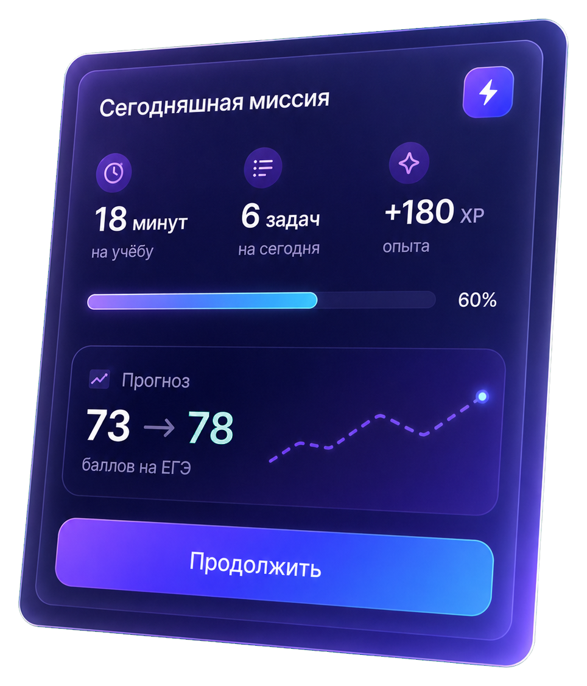

Понятные объяснения
Меняем способ объяснения, пока тема не станет понятной.
Стэди сам находит пробелы и каждый день выбирает следующий лучший шаг. Никаких лишних тем и бесконечных вариантов.

Меняем способ объяснения, пока тема не станет понятной.
Короткие миссии без перегрузки и чувства вечной домашки.
Персональный маршрут обновляется после каждого ответа.
Не нужно думать, что делать дальше. Стэди уже выбрал самый полезный шаг.
10–15 минут, чтобы определить уровень и найти реальные пробелы.
Только нужные темы, задания и повторения.
Закрывай темы, получай XP и следи за прогнозом.
Нажми на функцию, чтобы увидеть, как она помогает в подготовке.
Стэди видит историю ответов и подбирает следующий полезный шаг.
Не обещание волшебной кнопки, а результат небольших регулярных действий.
Диагностика найдёт точку старта и первый приоритет.
Короткие миссии помогают не выпадать из подготовки.
Маршрут покажет темы с максимальным влиянием на балл.
Первую диагностику и задания можно пройти без привязки карты.
Обязательные предметы
Всё из Базового + 1 предмет
Все предметы ОГЭ и ЕГЭ
Если ответа нет, напиши нам: support@stedy.ru
Маленькие регулярные шаги приводят к большому результату.
Начать бесплатно